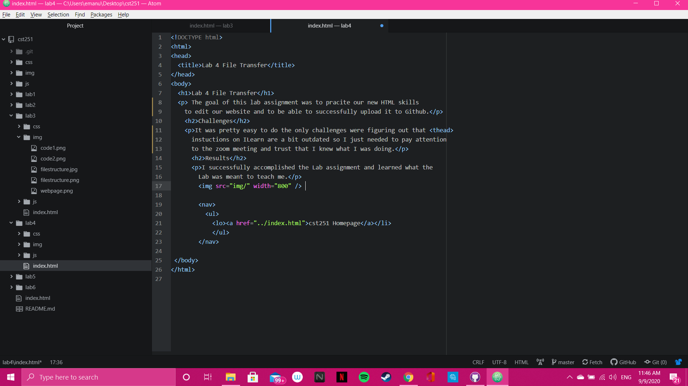

The goal of this lab assignment was to pracite our new HTML skills to edit our website and to be able to successfully upload it to Github.
It was pretty easy to do the only challenges were figuring out that the instuctions on ILearn are a bit outdated and that I needed to pay attention to the zoom meeting and trust that I knew what I was doing.
I successfully accomplished the Lab assignment and learned what the Lab was meant to teach me.
